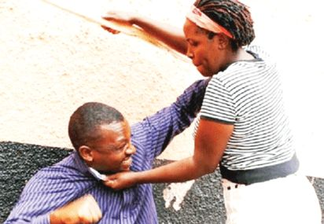

Domestic violence is prominent in Nigeria as in other parts of Africa. There is a deep cultural belief that it is socially acceptable to hit a woman as a disciplinary measure. Cases of domestic violence show no signs of reduction, regardless of age, tribe, religion, or social status. The CLEEN Foundation reports that 1 in every 3 respondents identified themselves as a victim of domestic violence, with a nationwide increase from 21% in 2011 to 30% in 2013.
Domestic violence takes many forms including physical, sexual, emotional, and mental abuse. Common forms of violence against women in Nigeria include rape, acid attacks, molestation, wife beating, and corporal punishment. The Nigerian government has taken legal proceedings to prosecute men who abuse women in several states, and there is currently a push for federal laws and a stronger national response.

Domestic violence against men — violence or other physical abuse toward men in a domestic setting such as in marriage or cohabitation — is generally less recognised by society, which can act as a further barrier to men reporting their situation or seeking help. While women are substantially more likely to be injured or killed in domestic violence incidents, men are less likely to report abuse to police, often facing social stigma, fear of not being believed, or the risk of false accusation.
"Men are often reluctant to report abuse because they feel embarrassed, fear they won't be believed, or worry their partner may retaliate." — HelpGuide.org
Behind closed doors, some Nigerian men are living with violence, fear and enforced silence in intimate relationships society assumes they control. Gender experts note that men can also be victimised by abusive partners who hit, kick, bite, punch, spit, throw objects, or destroy personal property. Such cases disrupt the dominant narrative of men as sole perpetrators, revealing their vulnerability within intimate relationships.
In the United Kingdom, the Office for National Statistics reported that one in five men — about 5.2 million — said they had experienced domestic abuse in their lifetime. In the United States, roughly one in four men experience some form of intimate partner physical violence. In Nigeria, official statistics on male survivors are largely unavailable, likely due to the stigma surrounding reporting.
A 2022 study published in the African Journal of Primary Health Care and Family Medicine found that of 1,227 respondents, 37.7% were survivors of intimate partner violence — 30% women and 7.7% men. A report by the Lagos State Domestic and Sexual Violence Agency documented 920 male gender-based violence cases between November 2024 and November 2025, of which 437 involved domestic violence.
"Statistics often portray men solely as perpetrators, yet men can also be victims. They must know that help is available and that speaking out is acceptable." — Titilola Vivour-Adeniyi, DSVA Executive Secretary
One of the most high-profile cases of domestic violence leading to androcide in Nigeria occurred on November 19, 2017, when Maryam Sanda stabbed her husband, Bilyaminu Bello, to death in their Abuja apartment. The argument was triggered by allegations of infidelity and Bello's intention to marry a second wife. After a trial spanning more than two years, the High Court of the Federal Capital Territory found Sanda guilty of culpable homicide and sentenced her to death by hanging.
In October 2025, Sanda was granted a presidential pardon commuting her sentence to 12 years imprisonment. However, in December, a five-member panel of the Supreme Court overturned the commutation and upheld the original death penalty.
Nigeria's legal framework recognises domestic violence in principle, but does not adequately protect male victims. Not all states have domesticated the Violence Against Persons (Prohibition) Act 2015. As of March 2025, Kano State remained the only state yet to adopt the VAPP Act, while Kogi, Borno, Jigawa and Katsina had passed but not gazetted it, limiting enforceability.